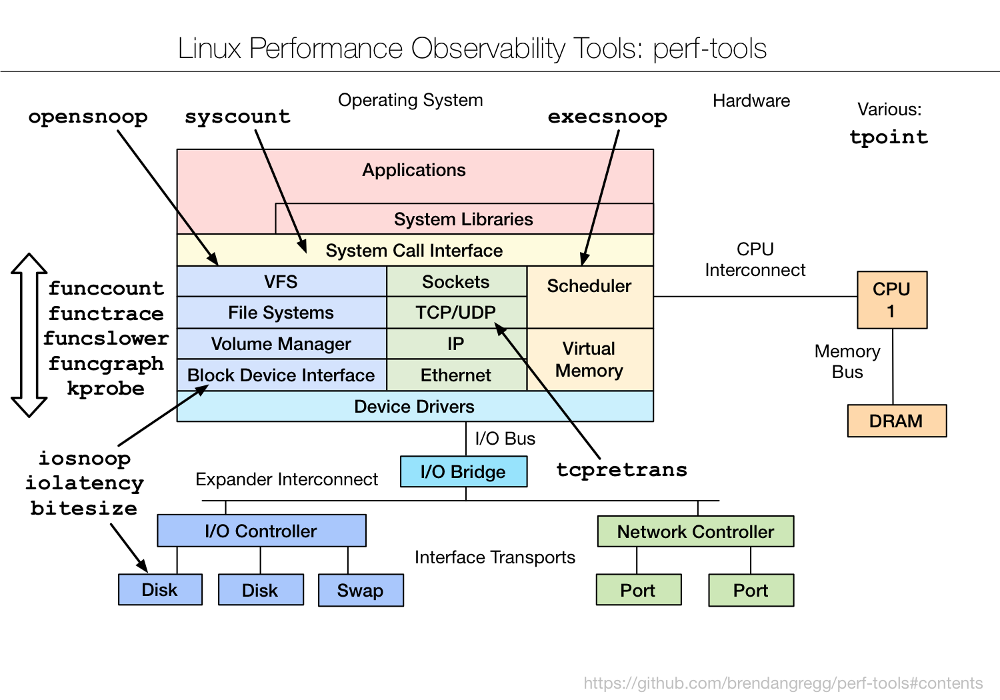

TL;DR — Before eBPF was everywhere, Brendan Gregg's perf-tools collection delivered powerful tracing using only what ships in every kernel: ftrace and perf_events. No compiler, no BCC, no new packages — just shell scripts over /sys/kernel/debug/tracing. That makes them the survival kit for old kernels (RHEL 6/7, embedded, locked-down boxes) where eBPF isn't available. This chapter walks the map: execsnoop, opensnoop, syscount, iosnoop/iolatency/bitesize, tcpretrans, and the ftrace power-trio — funccount, functrace, funcslower, funcgraph, kprobe, tpoint — what each does and when ftrace beats eBPF.
Why ftrace tools still matter in the eBPF era
The later chapters in this series (BCC, bpftrace) are the modern, preferred way to trace Linux. So why spend a chapter on the older ftrace-based perf-tools? Because eBPF needs a recent kernel (roughly 4.4+ for usable tracing, much newer for the good stuff), and the real world is full of machines that don't have it: RHEL/CentOS 6 and 7 still in production, embedded systems, appliances, air-gapped boxes where you can't install packages, and minimal containers without a toolchain. On all of those, ftrace has been built into the kernel since 2.6.27 (2008). It's always there.
perf-tools is a set of shell and awk scripts that drive two kernel facilities you already have:
- ftrace — the kernel's built-in function tracer, controlled through files under
/sys/kernel/debug/tracing. It can count and trace kernel function calls, follow call graphs, and hook tracepoints/kprobes, all with low overhead and zero dependencies. - perf_events — the kernel's sampling and PMC subsystem (the
perfcommand), used here for event counting and stack sampling.
The trade-off versus eBPF: ftrace tools are less programmable (no in-kernel aggregation logic of arbitrary complexity), and some do more work in user space, so a few have higher overhead. But for "I need to trace this and all I have is a stock kernel and bash," nothing beats them. They're the tracing equivalent of knowing how to start a fire without matches.

The original — Brendan Gregg's "perf-tools" (github.com/brendangregg/perf-tools). The simplified diagram below walks it box by box.
Fig 1 — The perf-tools map. Per-subsystem snoopers up top; the ftrace function-tracing power tools span the whole kernel from the left.
Setup — there isn't much
# clone the scripts (or they ship in some distros)
git clone https://github.com/brendangregg/perf-tools
cd perf-tools
# they need root + debugfs mounted (usually already is):
mount -t debugfs none /sys/kernel/debug 2>/dev/null
# run directly, no build:
sudo ./execsnoopThat's the whole install. No compiler, no headers, no kernel module. Each script is self-contained and sets up/tears down the ftrace state under /sys/kernel/debug/tracing for you.
The per-event snoopers
These mirror tools you'll meet again in BCC, but implemented over ftrace/kprobes so they run on old kernels.
| Tool | What it traces |
|---|---|
execsnoop | new processes (exec()) system-wide — catch short-lived processes, fork storms, surprise cron |
opensnoop | file opens with path + result — config/temp churn, missing files |
syscount | system-call counts by type or by process — find the syscall-heavy workload |
killsnoop | signals sent via kill() — who's killing what |
opensnoop -p <PID> | scope any snooper to one process |
sudo ./execsnoop # every new process as it starts
sudo ./opensnoop # every file opened, live
sudo ./syscount -c # syscall counts, summarised on Ctrl-C
sudo ./syscount -p 1843 # syscalls for one processexecsnoop is the standout: top samples on an interval, so a flurry of processes that each live 20 ms is invisible to it — but execsnoop catches every single one. The classic use is a server with mystery CPU/load where a script is fork-bombing short-lived helpers; execsnoop shows them instantly with their parent.
Block I/O tools
| Tool | What it shows |
|---|---|
iosnoop | per-I/O trace: process, device, sector, size, latency — one line per block I/O |
iolatency | block-I/O latency as a histogram — the latency shape and its tail |
bitesize | distribution of I/O sizes — are you doing tiny random or big sequential I/O? |
This is the ftrace counterpart to Part 1's biolatency/biosnoop. iolatency answers "is the disk's latency tight or does it have a tail?" without any eBPF; iosnoop names the process and sector behind each slow I/O; bitesize reveals access pattern — small random I/O hurts spinning disks far more than large sequential, and a database doing unexpectedly tiny I/Os often points to a config or index problem.
sudo ./iolatency 1 5 # block I/O latency histogram, 5x1s
sudo ./iosnoop # per-I/O trace
sudo ./bitesize # I/O size distributionNetwork
tcpretrans — the perf-tools version traces TCP retransmits over a kprobe on the kernel's retransmit function, printing source/dest/state, exactly like the eBPF version in our database post but running on kernels too old for BCC. Same diagnostic: packet loss on live connections, replication lag, mystery timeouts. On a RHEL 7 box where you can't install bpftrace, this is how you see retransmits.
sudo ./tcpretrans # live TCP retransmits via ftrace/kprobeThe ftrace power tools
The left side of the diagram is where perf-tools earns its name — generic kernel-function tracing that lets you investigate any kernel function, not just the ones a pre-made snooper covers. This is the real power, and the reason to learn ftrace even in the eBPF age.
| Tool | What it does |
|---|---|
funccount | count how often a kernel function (or set, with wildcards) is called |
functrace | trace each call to a kernel function — see them happen live |
funcslower | trace kernel function calls slower than a threshold — find the slow ones |
funcgraph | trace a function and its entire child call graph with timings — the killer feature |
kprobe | dynamically trace any function with custom argument/return capture |
tpoint | trace a specific kernel tracepoint and its fields |
Walk the typical investigation flow:
# 1. how often is a function called? (wildcards allowed)
sudo ./funccount 'vfs_*' # count all vfs_ calls
# 2. trace each call as it happens
sudo ./functrace vfs_read
# 3. which calls are slow? (> 10 ms here)
sudo ./funcslower vfs_read 10000 # threshold in microseconds
# 4. the big one — full call graph with per-function timing
sudo ./funcgraph -d 1 vfs_read # 1 second of the read call tree
# 5. custom kprobe: capture an argument
sudo ./kprobe 'p:myprobe do_sys_open filename=+0(%si):string'
# 6. trace a tracepoint with its fields
sudo ./tpoint block:block_rq_issuefuncgraph is the one to remember. It traces a kernel function and every function it calls, indented like a call tree, with the time spent in each. When a syscall is mysteriously slow, funcgraph on its entry function shows you exactly which deeper kernel function ate the milliseconds — a level of detail that's hard to get any other way without eBPF. It's verbose and higher-overhead, so you scope it tightly (a duration with -d, a single PID), but for "where inside the kernel did this go slow?" it's unmatched on an old box.
functrace, funcgraph especially) can generate enormous trace volume on hot functions and add noticeable overhead. Always bound them — a short duration (-d 1), a specific PID, or a narrow function — and never leave funcgraph on a hot path running unattended in production.Various: tpoint and the raw interface
Top-right of the map lists tpoint on its own because tracepoints are the safest thing to trace — they're a stable kernel ABI (unlike raw kprobes on function names, which can vanish across kernel versions). tpoint -l lists every available tracepoint; tpoint <event> traces one with its fields. Under all of these tools is the same raw /sys/kernel/debug/tracing interface — you can drive it by hand with echo into control files, which is sometimes the only option on a truly minimal system. perf-tools is, in effect, a friendly wrapper over that interface.
perf-tools vs BCC vs bpftrace
| perf-tools (ftrace) | BCC / bpftrace (eBPF) | |
|---|---|---|
| Kernel needed | 2.6.27+ (ancient OK) | 4.4+ for basics, newer for full power |
| Dependencies | none — bash + kernel | BCC toolchain / bpftrace package |
| Programmability | limited (scripts over ftrace) | full in-kernel programs + aggregation |
| Overhead | low–moderate (some user-space work) | very low (in-kernel aggregation) |
| Best for | old/locked-down boxes, no install | everything modern |
The takeaway isn't "ftrace vs eBPF" — it's both, knowing which the box can run. On anything modern, reach for bpftrace (Part 8). On a RHEL 6/7 relic or an appliance you can't touch, perf-tools gets you the same answers. And ftrace remains genuinely better at one thing: funcgraph's call-graph-with-timings view is a uniquely clear way to see inside a single slow kernel path.
Hands-on: trace on a stock kernel
The whole point of perf-tools is "no install needed." Clone the scripts, run as root — works on a RHEL 6/7 box where eBPF can't. Each example shows the command, real output, and the decision.
Setup
git clone https://github.com/brendangregg/perf-tools && cd perf-tools
# debugfs is usually already mounted; if not:
sudo mount -t debugfs none /sys/kernel/debug 2>/dev/nullCatch short-lived processes
sudo ./execsnoopCOMM PID PPID ARGS
sh 28341 9012 sh -c /opt/cron/cleanup.sh
find 28342 28341 find /tmp -mtime +1 -deleteRead it: a cron job spawning find across /tmp every minute — invisible to top. Do this: if it correlates with your latency spikes, reschedule or scope it.
Block I/O latency — without eBPF
sudo ./iolatency 1 5 >=(ms) .. <(ms) : I/O |Distribution |
0 -> 1 : 1240 |######################|
8 -> 16 : 95 |## |
64 -> 128 : 22 |# | <- 64-128 ms tailRead it: same insight as biolatency but on a kernel too old for BCC — most I/O is fast, but a 64–128 ms tail exists. Do this: pair with ./iosnoop to name the process behind the slow I/Os.
TCP retransmits on an old box
sudo ./tcpretransTIME PID LADDR:PORT RADDR:PORT STATE
05:20:11 1102 10.0.0.5:5432 10.0.0.9:44102 ESTABLISHEDDo this: same diagnosis as the modern tool — packet loss on live DB traffic; check the NIC and link.
The power move — funcgraph inside a slow kernel path
# a syscall is mysteriously slow — trace it + its whole child call tree
sudo ./funcgraph -d 1 vfs_read 2>/dev/null | head -25 DURATION FUNCTION CALLS
vfs_read() {
ext4_file_read_iter() {
0.4 us generic_file_read_iter() {
12380 us wait_on_page_bit(); <- 12 ms blocked here
}
}Read it: the read spent 12 ms in wait_on_page_bit — it blocked waiting for a page to come off disk (a cache miss hitting slow storage), not in CPU work. Do this: this is the unique perf-tools superpower — a call-tree-with-timings view that pinpoints which deeper kernel function ate the milliseconds. Scope it tight (-d 1, a PID) — it's high-overhead on hot paths.
Takeaways
- Zero-dependency tracing. perf-tools runs on any kernel since 2008 using built-in ftrace/perf_events — no compiler, no packages, no module.
- The survival kit. When the box is too old or locked-down for eBPF (RHEL 6/7, embedded, air-gapped), these are how you trace.
- Snoopers for the common cases:
execsnoop,opensnoop,syscount,iosnoop/iolatency/bitesize,tcpretrans. - ftrace power tools for anything else:
funccount→functrace→funcslower→funcgraphwalks from "how often" to "show me inside the slow call." - Bound the heavy ones.
funcgraph/functraceon hot functions add real overhead — scope by time/PID, never leave running.
References
- brendangregg/perf-tools — the scripts + per-tool docs (source of this diagram).
- Brendan Gregg — perf examples — the perf_events side.
- Kernel ftrace documentation — the raw interface underneath.
Extra reads
- Part 7 — bcc/BPF Tracing Tools — the modern eBPF successor to these tools.
- Part 1 — Observability Tools — where these tools sit on the big map.
- eBPF for Database Troubleshooting — the same snoopers, eBPF-era.
Built from Brendan Gregg's "Linux Performance Observability Tools: perf-tools" diagram (github.com/brendangregg/perf-tools). Function-tracing tools can add significant overhead on hot paths — bound them by duration/PID and test on a non-production box first.